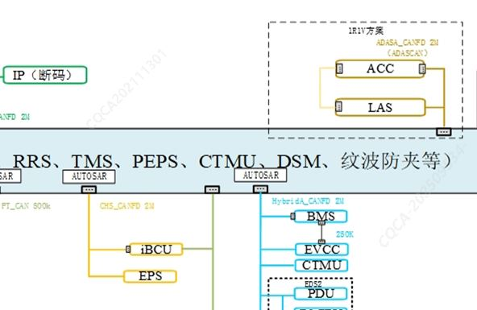
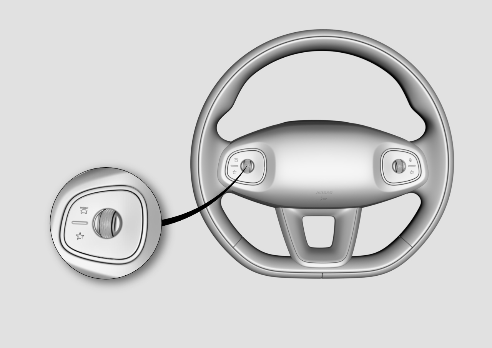

Принципиальная схема системы

Система помощи при движении по полосе реализует функцию предупреждения о сходе с полосы движения с помощью камеры, установленной у ветрового стекла рядом с внутренним зеркалом заднего вида. При включении системы помощи при движении по полосе ее состояние отображается на экране бортового компьютера на дисплее комбинации приборов. Настройка функции системы помощи при движении по полосе выполняется в меню: «Настройки автомобиля» → «Центр управления автомобилем» → «Системы помощи водителю» → «Помощь при вождении». Если система помощи при движении по полосе недоступна, на дисплее комбинации приборов отображается сообщение о неисправности. Основные функции системы приведены ниже:
Предупреждение о сходе с полосы движения
При наличии разметки на дорожном покрытии и скорости движения более 60 km/h в случае отклонения автомобиля от полосы и наезда колесами на дорожную разметку комбинация приборов выдает звуковое предупреждение, а на рулевом колесе срабатывает вибросигнализация.
Удержание полосы движения
При наличии разметки на дорожном покрытии и скорости движения более 60 km/h в случае отклонения автомобиля от полосы и приближения колес к наезду на дорожную разметку рулевое колесо автоматически выполняет корректирующее подруливание в противоположную сторону, обеспечивая движение автомобиля внутри полосы.
Автоматическое управление дальним светом
В условиях темноты и при скорости движения более 30 km/h в отсутствие впереди попутных транспортных средств, уличного освещения и встречного транспорта система автоматически включает дальний свет; при появлении уличного освещения, попутных или встречных транспортных средств система автоматически переключается обратно на ближний свет.
Распознавание дорожных знаков ограничения скорости
В процессе движения камера автоматически распознает дорожные знаки ограничения скорости и выводит информацию на комбинацию приборов; если скорость автомобиля превышает установленное ограничение скорости движения, комбинация приборов выдает предупреждение.
Интегрированный адаптивный круиз-контроль
С помощью радара системы адаптивного круиз-контроля (ACC) и камеры системы помощи при движении по полосе (LAS) система обнаруживает впереди идущие транспортные средства и линии разметки, управляет скоростью для поддержания заданной крейсерской скорости или предварительно установленной дистанции следования до впереди идущего автомобиля, а также управляет рулевым управлением для удержания автомобиля в полосе.
С помощью радара системы адаптивного круиз-контроля (ACC) и камеры системы помощи при движении по полосе (LAS) система обнаруживает впереди идущие транспортные средства и траекторию их движения, управляет скоростью для поддержания предварительно установленной дистанции следования до впереди идущего автомобиля, а также управляет рулевым управлением для движения по траектории впереди идущего автомобиля.
Настройка функций
Выключатель настройки предупреждения о сходе с полосы движения:
Настройка вспомогательного режима / режима предупреждения о сходе с полосы движения и т.д. выполняется в меню центрального дисплея «Центр управления автомобилем» → «Системы помощи водителю» → «Помощь при вождении»
Выключатель настройки системы распознавания дорожных знаков ограничения скорости:
Настройка предупреждения о превышении скорости выполняется в меню центрального дисплея «Центр управления автомобилем» → «Системы помощи водителю» → «Помощь при вождении».
Выключатель настройки интеллектуальной системы дальнего света:
Включение/выключение интеллектуального дальнего света и другие настройки выполняются в меню центрального дисплея «Центр управления автомобилем» → «Освещение».
Кнопки рулевого колеса интегрированной системы адаптивного круиз-контроля:

Активация: однократно перевести подрулевой рычаг селектора вниз
Выход: однократно перевести подрулевой рычаг селектора вверх или нажать на педаль тормоза
Регулировка крейсерской скорости: регулировка временного интервала дистанции следования осуществляется отклонением влево/вправо колесика с левой стороны рулевого колеса
Регулировка временного интервала дистанции следования: регулировка временного интервала дистанции следования осуществляется отклонением влево/вправо колесика с левой стороны рулевого колеса
Включение/выключение круиз-контроля по полосе выполняется в меню «Центр управления автомобилем» → «Системы помощи водителю» → «Помощь при вождении».